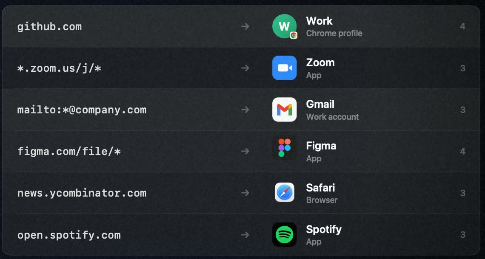

What it does
Set Linkway as your default browser. Every link you click goes through it first.
The right browser. Every time.
A small menu bar app for macOS that decides where your links open. It cleans each link, follows your rules and asks only when it has to.
Set Linkway as your default browser. Every link you click goes through it first.
Removes trackers like utm_*, fbclid, gclid and msclkid, and unwraps redirect links from Google, Facebook and Outlook safe links. Signed and login links are left alone. Short links from bit.ly, t.co and similar can be expanded first, if you turn it on.
Choose a browser or a profile from a row of tiles. Press ⌘1, ⌘2 and so on to pick from the keyboard. Tick Remember this choice and Linkway makes a rule for that site.
Match by host, subdomain, URL prefix, path, sender app or mail domain. Rules run in order and the first match wins, with no prompt. A built-in tester shows which rule matches a URL without opening it. Hold ⌥ while clicking a link to see the picker anyway.
Open links in a specific profile of Chrome, Edge, Brave or Firefox. Profiles are picked up automatically when you add or rename them.
Hold ⇧ in the picker to open the link in a private window, in browsers that support it.
Web links for Figma, Linear, Notion, Zoom, Microsoft Teams, Spotify, Discord and Slack open in the desktop app when it is installed.
Send mailto: links to a mail app or to webmail: Gmail, Outlook, Yahoo Mail, Fastmail or Proton Mail. Recipients, subject and body come along.
A Chromium extension and a bookmarklet hand the current page or any link to Linkway. The bookmarklet works in Safari too.

linkway:// URL schemeHand a link to Linkway from Terminal, AppleScript, scripts or a web page. Append the link as it is, no encoding needed.
# Route through your rules, like a normal click
open "linkway://open/https://example.com/docs"
# Always show the picker
open "linkway://prompt/https://example.com/docs"
# Strict form for callers that encode
open "linkway://open?url=https%3A%2F%2Fexample.com%2Fdocs"http, https and mailto links only.x-choosy://open/, prompt.all/, prompt.running/, best.all/ and best.running/ work as expected.